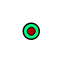
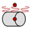
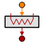
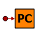
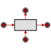
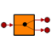

| Symbol | Name | Description |
| BNode [+] | Time dependant boundary condition in temperature (signal input) | |
| Cylinder [+] | 2D thermal model of a cylinder wall | |
| Cylinder_AI [+] | 2D thermal model of a cylinder wall axially Isolated | |
| DNode [+] | Diffusive thermal node | |
| DNodeMat [+] | Diffusive thermal node with variable properties | |
| DNodeMat_vec [+] | Diffusive thermal node with variable properties | |
|  | DNodeRoom [+] | Diffusive thermal node which represents a room with a volume V |
| DNphases [+] | Diffusive thermal node taking into account phase changes | |
|  | FreeConvec_Horizontal_Cylinder [+] | |
| FreeConvec_Plate [+] | ||
| FreeConvec_UserDefined [+] | ||
| FreeConvec_Wire [+] | ||
| FreeConvec_simple [+] | Natural convection from a surface to a simplified fluid | |
| GL [+] | Linear thermal conductance | |
| GL_mat [+] | Linear thermal conductance with variable properties | |
| GR [+] | Radiative thermal conductance with constant REF | |
| HeatFlowMultiplier [+] | Heat flow multiplying component | |
|  | Heater [+] | Electrical heater (local or linear). Power dissipation value is given by the external signal |
| Insulation [+] | Thermal insulation | |
| Peltier [+] | Thermoelectric heat pump model | |
|  | Periodic_Stop_Control [+] | Device allowing stopping the simulation when the dynamic response of the measured temperature becomes periodic |
|  | Plate [+] | 2D thermal model of a rectangular plate |
| Q_sensor [+] | Heat flow sensor model | |
| Radiator [+] | 2D thermal model of a radiator | |
| Saddle [+] | Thermal model of a saddle component used to fasten heat pipes to a surface | |
| TD_GL [+] | Linear thermal conductance with table properties | |
| T_sensor [+] | Temperature sensor model | |
|  | Th_Demux [+] | Thermal demultiplexer, splitting a thermal port into two ports |
| Th_Mux [+] | Thermal multiplexer, bringing together two thermal ports into one port | |
| Tube [+] | Unidimensional wall component | |
| VCHP [+] | Variable Conductance Heat Pipe component | |
| View_Factors [+] | Radiative heat transfer model among the nodes by means of the view factors | |
| Wall [+] | 1D thermal model of a wall |
Document generated automatically (Date: 2019:01:23, Time: 00:20:04)